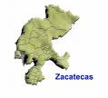
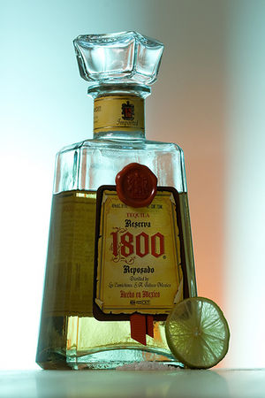
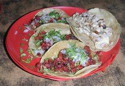
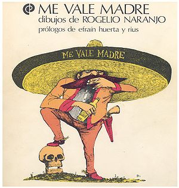

Jalisco
 De: La Frikipedia, la enciclopedia extremadamente seria.
De: La Frikipedia, la enciclopedia extremadamente seria.
| De la serie Países del planeta tierra:
|
| Xalixco (sí, con x)
|
|
| Lema: Jalisco es México
|
Himno: Tortas ahogadas al grito de guerra, tequila con limón, tequila con limón, de aquí no es Ron Damón.
|
| 
Estamos justo debajo de ellos, metiendonos por su culodo
|
| Capital
|
La Perla de Occidente (la ciudad donde se dan los hombres...)
|
| Mayor ciudad
|
La metropolis de Guadalajara
|
| Lenguas oficiales
|
Engrish, nahuátl, huichol y... ah sí, Español
|
| Gobierno
|
Emilianista Aristocrático
|
| Tirano Golfista
|
Juan Sándoval Iñiguez
|
| Área
|
79 mil km2
|
| Población
|
Narcotraficantes 200,000, mariachis 2 millones, fusbrolistas 500,000 estudiantes 1.5 millones, resto 100,000 personas.
|
| Moneda
|
Varo, aunque se intenta cambiar por pechereque.
|
| Zona horaria
|
Lamentablemente estamos en la misma que los chilangos.
|
| Dominio Internet
|
{{{dominio_en_internet}}}
|
| Código telefónico
|
01 800 62742244
|
| Tequila, mariachis, tacos, definitivo: Jalisco es México.
|
«¡¡¡VIVA JALISCO, CABRONES!!!! »
~ Un jalisquillo gritando después de 5 vasos de tequila.
«¡¡¡VIVA JALISCO, CABRONES!!!! »
~ Un jalisquillo gritando después de ver a un chilango.
«¡¡¡VIVA JALISCO, CABRONES!!!! »
~ Un jalisquillo gritando después de ver a un norteño.
«¡¡¡VIVA JALISCOU, CABROUNES!!!! »
~ Un jalisquillo gritando después de ver a un gringo.
Estado insoberano de Méjxico mejor conocido como mariachilandia, caracterizado por ser la tierra de donde viene todo lo méjxicano:
- Mariachis
- Tequila
- Tacos
- Pxndx (No! Esta no es nuestra culpa, culpen a los norteños, ¡I ñor!)
Lugares para visitar
Entre estos se encuentran la muy conocida:
Laguna de Chapala
Popular por ser el lago más grande y, por lo tanto el más contaminado de México. Lugar de diversión para los gringos pieles rojas y buen lugar para comprar una casa si es que eres un narcotraficante.
A través de los años la Laguna ha pasado por distintos estados de alteración del hagua:
- Desde que Diox la creó hasta 1980 todo estaba bien.
- 1980-1990 comienza la sobrepoblación de Guadalajara, y comienza a bajar el nivel nivel de agua.
- 1990-2000 se comienza a ir al carajo el Lago y pasa al nivel de Laguna. En esta época comienzan a aparecer los primeros lirios acuáticos en el Lago.
- 2001-2007 El Lago se va totalmente al carajo y su nivel de hagua pasa a ser un 50% lirio acuático, 25% peces muertos, 10% orina de gringos, otro 10% de orina, pero esta vez mejicana y un 5% de hagua potable.
- 2008 El Lago recupera mágicamente su esplendor de antaño y vuelve a la normalidad.
Y por si es primavera:
Pto. Vallarta
- Conocido por haber sido el primer lugar en México en el que las mujeres enseñaron las tits a cambio de collares.
- Aparte de gringas borrachas, también hay una que otra playa decente y sin tantos chilangos como Acapulco, pero tampoco tan chingonas como Cancún.
 La variación reposada del Tequila
Obra maestra y epítome de la sociedad Jaliciense y de la que todos los mexicanos estamos orgullosos.
Hay distintos tipos de tequila:
- Reposado.
- Blanco.
- Agave azul.
- Tequilana.
- Con gusano de maguey.
- Con gusano de maguey albino.
- Con gusano de maguey negro (Este se dejó de producir por obvias razones).
- Sin gusano de maguey.
- Añejado.
- Reposado.
Proceso de elaboración
- Primero se corta la penca de maguey.
- Después se muele.
- Se le saca el agua (a alguien le gustaría encontrarse con un poco de eso en su tequila).
- Al producto que queda después del último paso se lo guarda en barricas de 2-6 años (Por qué? Sólo por joder).
- Se embotella y se exporta a países como Brasil, USA y Europa.
Comida
En Jalisco abunda la comida, es el estado con mayor número de comidas típicas del país como lo son:
- Pozole.
- Torta ahogada (Véase la bandera).
- Tacos.
- Mole poblano.
- Pambazos.
- Zopes (Sí, también hay una comida con ese nombre).
- Birria de chivo.
- Birria de vaca.
- Birria de conejo.
- Birria del animal que se te pase por delante.
- Tinga.
- Carnitas (Parte principal de la torta ahogada).
- Loche bañado.
Y muchas otras exquisiteces más...
Proceso de preparación del Taco
 ¿Acaso necesito decirte lo que es?
- Se toma una tortilla.
- Se le pone encima comida.
- Le das tu forma preferida.
- Listo has creado un taco.
¿No fue tan difícil verdad?
Cabe destacar que:
- Si se le rellena de queso y se le dobla a la mitad terminarás con una quesadilla entre las manos.
- Si doraste primero la tortilla y luego le pusiste la comida encima será una tostada.
- Si la rellenaste de queso y cebolla, la enrollaste y la pasaste por un poco de chile se transformará en una enchilada.
- Si en vez de tortilla utilizaste un birote (bolillo, especie de pan), entonces hiciste un birote.
Vestimenta
 He aquí un personaje con la indumentaria típica
Aunque la gente de ahora vista ropa más moderna, sigue siendo común encontrar personas por las calles con la siguiente indumentaria:
- Sombrero de mariachi
- Pantalón de mariachi (en caso de ser mujer será un vestido mariachi)
- Camisa mariachi
- Saco mariachi
- Botas mariachi
- Calzones mariachi
- Bigote mariachi (sin importar sexo ni edad)
- Y pistolas mariachi
Enlaces
 Mēxihco Mēxihco
|
Estados Libres y Soberanos Pero Igual Subordinados
Ciudades, Localidades y Ejidos
El Mundo del Espectáculo, la Farándula, Luminarias y otras Vergüenzas
Tribus Urbanas Nacionales
Historia y su Rara Cultura
|
Autor(es):
- Xavy
- Dark temptation
- RomF
- Omfafan
- Gñapero Solitario
- Feloto
- Genericool
- TheLoquendofan
Frikipedia 2005-2016, Licencia
GFDL 1.2 - Extraído por FrikiLeaks